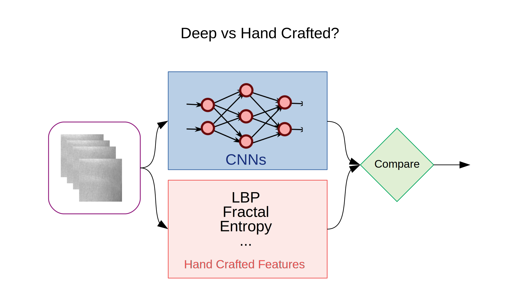
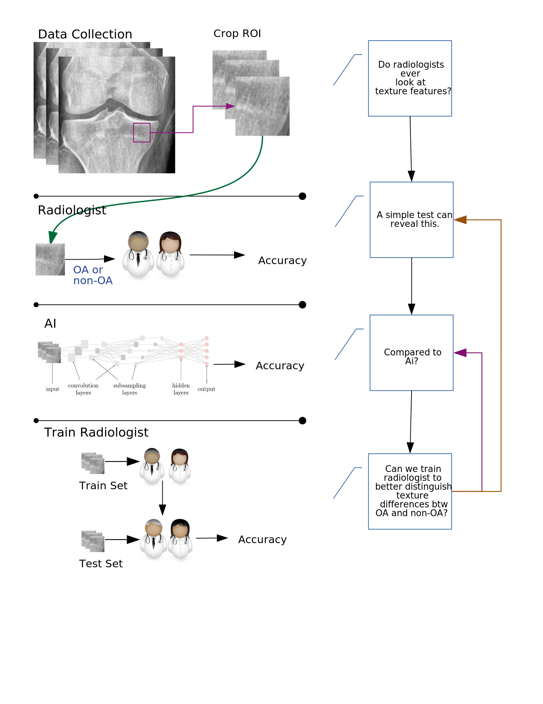
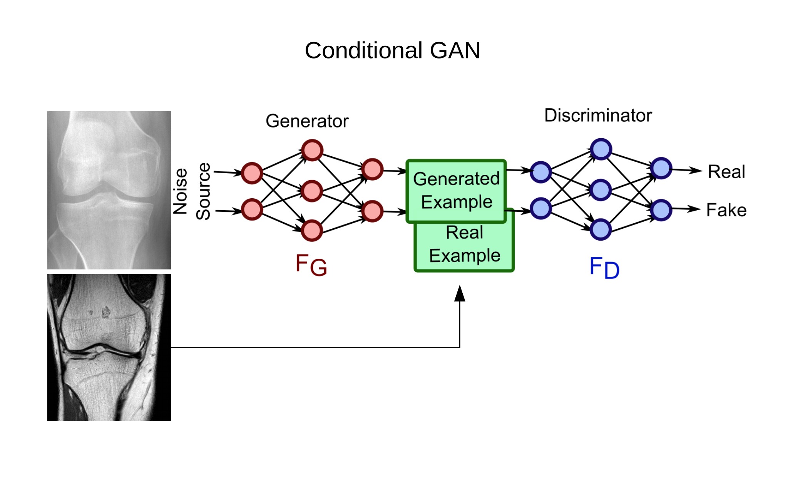
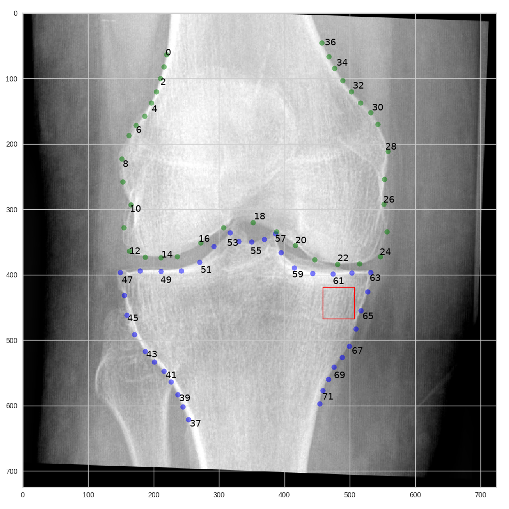
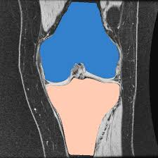
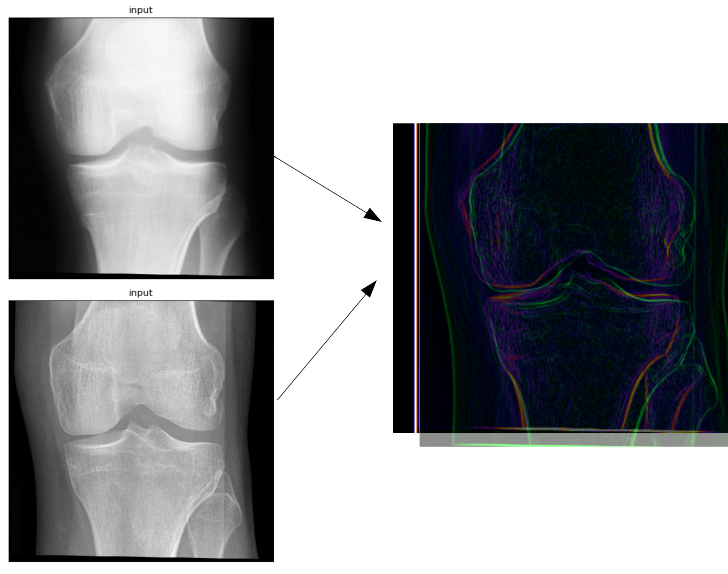
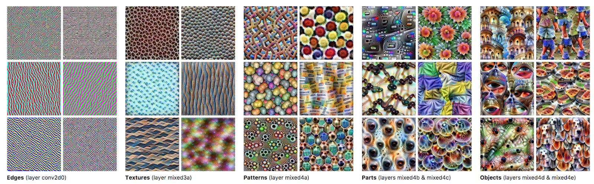
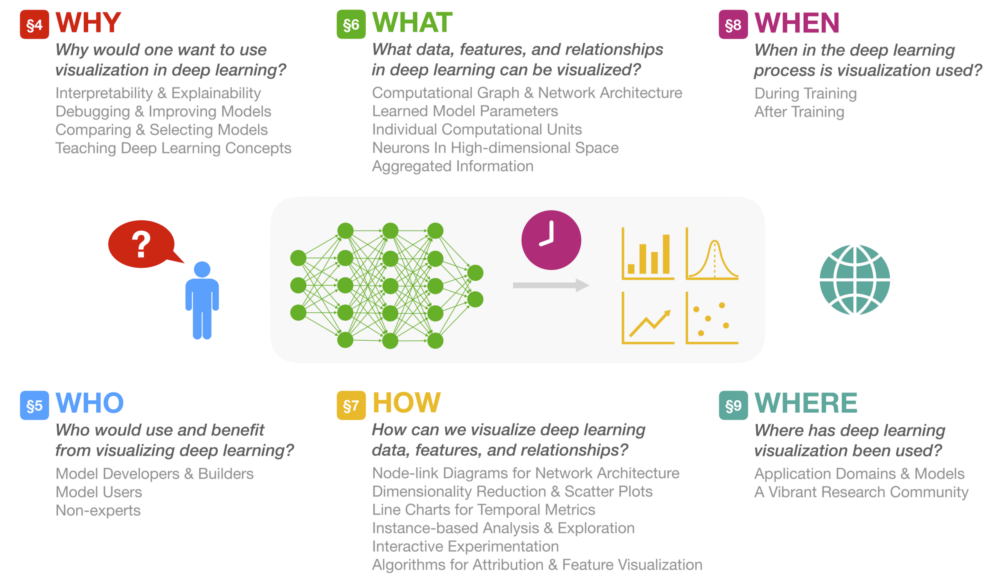

Projects
1. Blame Texture Descriptors?#
Fair comparison of deep learning and hand crafted features for OA detection:
Be Fair
- Use exact same ROI for both.
- Same data augmentations.
- Same classifiers.
Compare
- Winner?

Are we looking at the right location?
Texture ROI vs Full Joint
- Most informative region?
2. Do radiologist ever look at texture?#

3. Transform Radiographs to another image domain (MRI or another modality)#
Conditional GANs
Can we use GANs to generate new images that would contain more information about OA and then use AI methods for evaluation.

4. Landmark detection#
Landmark Localization
CNNs

5. Knee joint segmentation using deep neural networks#
Partition knee radiographs into femur and tibia regions
- CNNs
- Fully CNNs
- U-Net

6. Registration#
Warping input image onto a target image
- Deformable object registration
- Template matching
- Could be used also for:
- segmentation purposes
- landmark localization

- Patient based registration.
- Quantification of progression.
7. Deep feature visualization#
Answer what the network detects.

From distill
 From https://fredhohman.com/visual-analytics-in-deep-learning
8. Texture Features of MRI vs X-RAY?#
Comparison